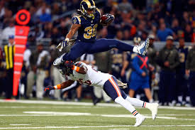
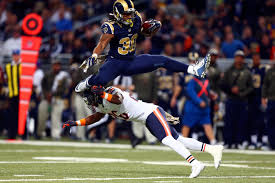
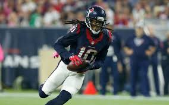
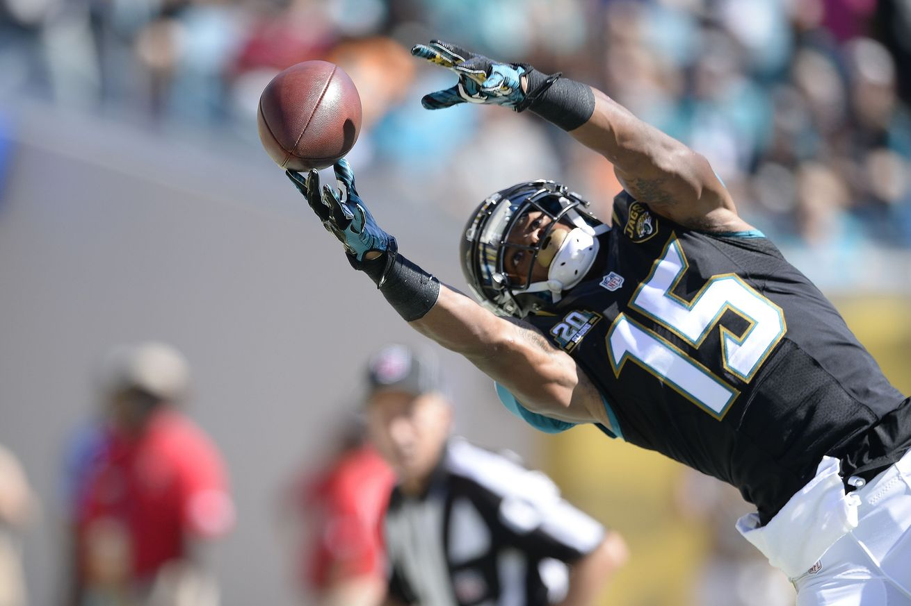
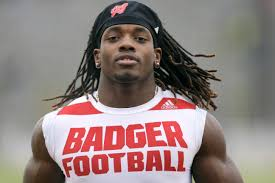
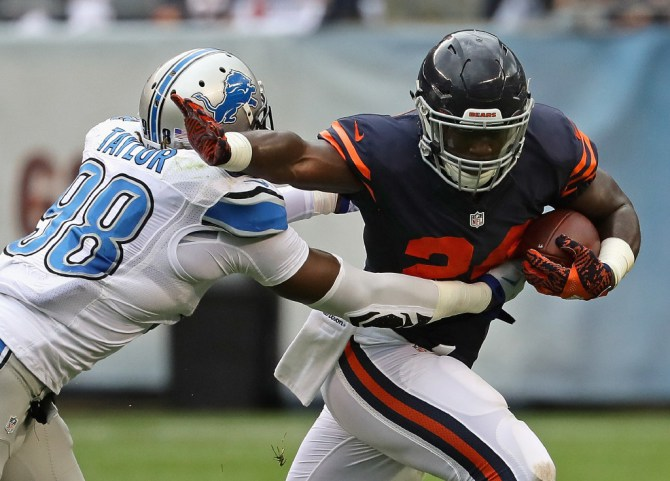
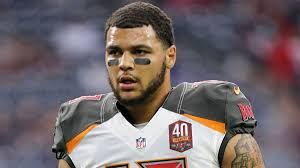

1) Todd Gurley
Why todd...why?
Talk about your all time fail... Todd just couldn't get things done. But then again...Rams.
This website is all about fantasy football and how it ruins people's lives. This year there were a ton of fantasy busts, and some sleeper picks that turned out. But first, here are the nominees for the biggest fantasy football busts of 2016...
Talk about your all time fail... Todd just couldn't get things done. But then again...Rams.
I rest all the blame on Osw...nvm.
A-rob wasn't slated to be quite the garbage time hero he was last year, but we also didn't expect him to play like a used car salesman.
Now it's time for this year's winning lotto numbers...¥ € TALK ABOUT MONEY!!! ¥ €
It seems as if all of that hard offseason work with the legendary AP has really paid dividends, as Gordon produced top 5 fantasy RB numbers for a 6th round price.
Everyone thought this job was Lankford's for the taking, but Howard came out of nowhere to steal the starting job and performed like a top ten RB, taking many teams to the championship.
While Mike Evans shouldn't be classified as a sleeper, based on his average draft position and the preseason negativity he was up against, finishing as the number one scoring WR in fantasy for a third round price counts as a huge win in my book!
